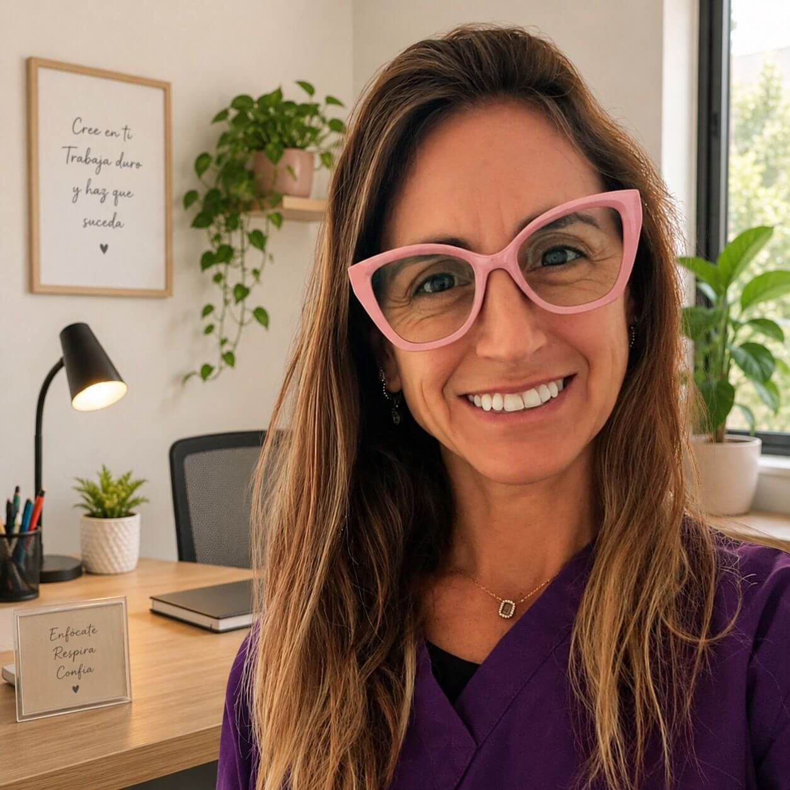

Las especialistas
Dra. Ma. Soledad Giménez
Odontóloga · UAIOdontóloga egresada de la Universidad Abierta Interamericana. Terapeuta floral, Reiki Máster y especialista en yoga facial y terapia neural.

Romina Belén Villarino
Odontóloga · NYUOdontóloga con formación en New York University. Especialista en bio-odontología, descodificación dental y registros akáshicos.

Brayan Enrique Vélez Giles
Es Licenciado en Psicología por la Universidad Autónoma del Estado de México (UAEMex). Su trayectoria integra la psicología con tradiciones de sanación de oriente, explorando la relación entre cuerpo, emoción y conciencia. Está formado en Medicina Tradicional China y Acupuntura, Reiki tibetano, tántrico y hawaiano, Yoga de los Sutras de Patanjali y terapia floral internacional. Desde hace más de una década acompaña procesos de transformación interior como psicoterapeuta, acupunturista y facilitador de Reiki, integrando prácticas terapéuticas y contemplativas orientadas al equilibrio emocional y energético. Actualmente desarrolla una especialización en acupuntura aplicada a las emociones, basada en su libro “Acupuntura emocional: de la aguja a la mente”, promoviendo una visión integral de la salud y el bienestar..
Consultar